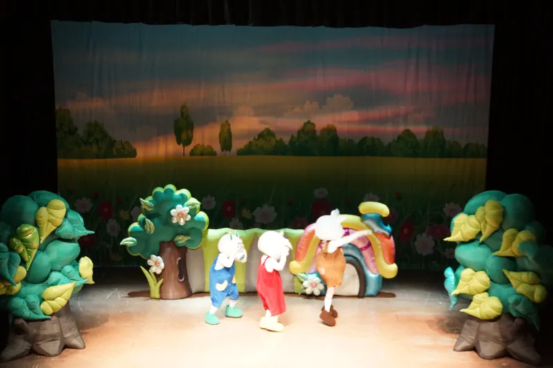

기업·기관 직장어린이집
직장어린이집정기공연
회사 안 어린이집에도 공연이 찾아갑니다. 계절과 보육 주제에 맞춰 작품을 바꿔 가며 아이들과 정기적으로 만납니다.
- 부산·경남
- 매달·분기·학기 정기공연
- 1회 40분 안팎
- 유희실·강당 공연
한눈에 보기
아동극단 징검다리는 부산·경남의 기업·공공기관 직장어린이집으로 찾아가 정기공연을 합니다. 한 번 공연부터 매달·분기·학기 단위 정기공연까지 상담하며, 안전·성폭력 예방·생활습관·전래동화 같은 주제로 작품을 바꿔 가며 올립니다. 공연은 한 편에 40분 안팎이고, 어린이집 유희실이나 회사 안 강당처럼 아이들이 모여 앉을 수 있는 곳이면 공간에 맞춰 준비합니다.
최종 업데이트 2026년 10월 29일 · 아동극단 징검다리 · 문의 010-3837-8479
직장어린이집에 잘 맞는 이유
아이 눈높이에 맞춘 40분
유아가 집중할 수 있는 길이로, 노래·율동·관객 참여가 이어지는 캐릭터 인형극입니다.
보육 주제와 연결
안전, 성폭력 예방, 생활습관, 환경, 전래동화처럼 어린이집에서 다루는 주제를 연극으로 전합니다.
연간 계획을 함께
원 행사 일정에 맞춰 공연할 달과 작품을 미리 정해 두면, 매번 새로 알아보지 않아도 됩니다.
회사 행사와도 연결
어린이날·가정의 달 가족 초청 행사, 직원 가족의 날 공연도 상담합니다.
연간 정기공연 예시
예시입니다. 어린이집 연간 계획에 맞춰 달과 작품을 바꿀 수 있어요.
- 3월새 학기 · 우정심술꾼 로보와 꿀꿀이 삼총사함께하면 든든해요
- 4월안전삐뚤빼뚤의 안전일기엘리베이터·버스·나들이 안전
- 5월가정의 달은혜갚은 호랑이가족 초청 공연으로도 좋아요
- 7월생활습관 · 환경배탈난 호랑이거짓말하지 않기, 쓰레기 바로 버리기
- 9월성폭력 예방안돼요 안돼!내 몸은 내가 지켜요
- 10월전래동화용궁으로 간 토끼지혜로 위기를 넘어요
- 11월협동꼬리뽑힌 호랑이힘을 모으면 이겨요
- 12월겨울 · 옛 생활팥죽할멈팥죽 먹는 계절 이야기
담당자께서 알려 주시면 되는 것
공간
아이들이 앉아서 볼 수 있는 유희실·강당이면 됩니다. 공간 크기를 알려 주시면 무대를 맞춥니다.
일정
홈페이지 달력에서 비어 있는 날을 골라 문의하거나, 한 해 일정을 한 번에 상담해 주세요.
견적
공연 횟수·인원·장소에 따라 견적으로 안내합니다. 견적서가 필요하면 문의할 때 이메일을 남겨 주세요.
지역
부산 16개 구·군과 양산·김해·창원 등 경남 지역으로 찾아갑니다.
자주 묻는 질문
한 번만 공연을 요청해도 되나요?
네. 1회 공연부터 매달·분기·학기 단위 정기공연까지 모두 상담합니다. 정기공연은 연간 계획을 먼저 함께 정한 뒤 날짜를 잡습니다.
공연 시간과 관람 연령은 어떻게 되나요?
한 편에 40분 안팎이며, 만 3~5세 유아가 즐길 수 있게 노래와 관객 참여를 넣어 구성합니다.
어린이집 안에 무대가 없어도 되나요?
네. 유희실이나 회사 안 강당처럼 아이들이 모여 앉을 수 있는 공간이면 됩니다. 공간 크기를 알려 주시면 맞춰 준비합니다.
공연비는 얼마인가요?
공연 횟수, 관람 인원, 장소, 작품에 따라 달라집니다. 홈페이지 달력에서 문의하시거나 010-3837-8479로 연락 주시면 견적을 안내해 드립니다.
부산이 아닌 경남 지역 직장어린이집도 오나요?
네. 양산·김해·창원 등 경남 지역도 찾아갑니다. 거리와 일정을 함께 보고 상담해 드려요.